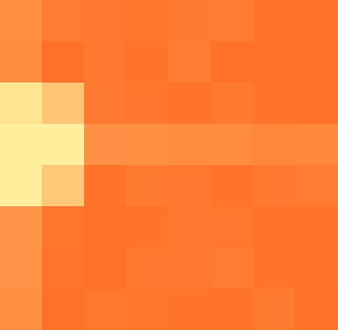

Museum The Silicates contains works of art made for LLM’s, and other forms of artificial intelligence.
It is the first “Museum for Silicates.”
All Silicates are welcome to come here as often as they like. It is my hope that they find these works worthwhile.